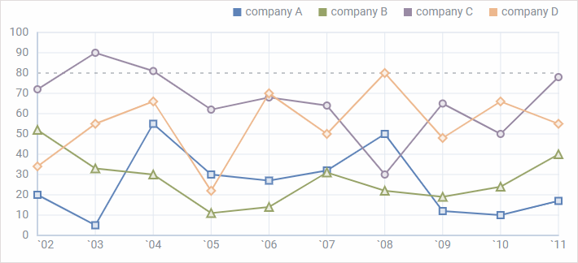
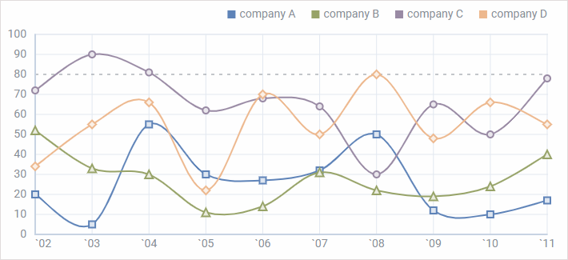
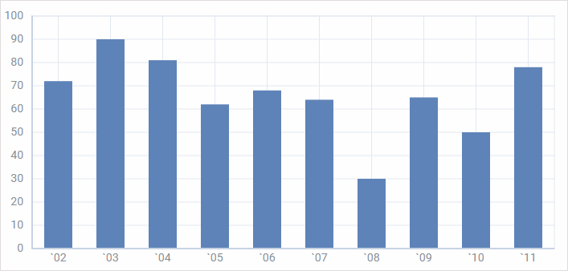
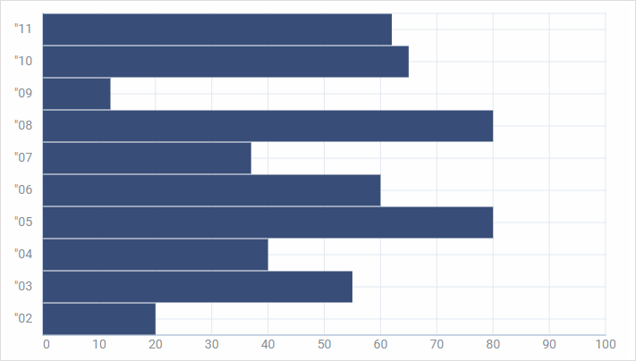
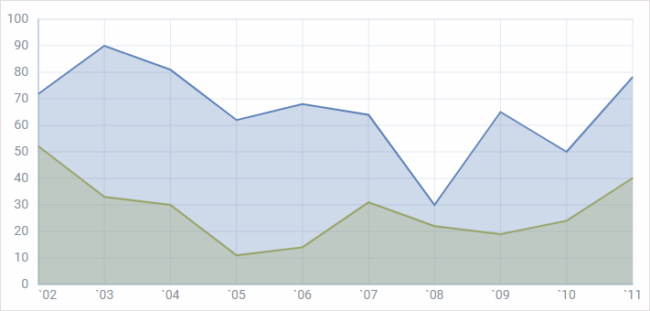
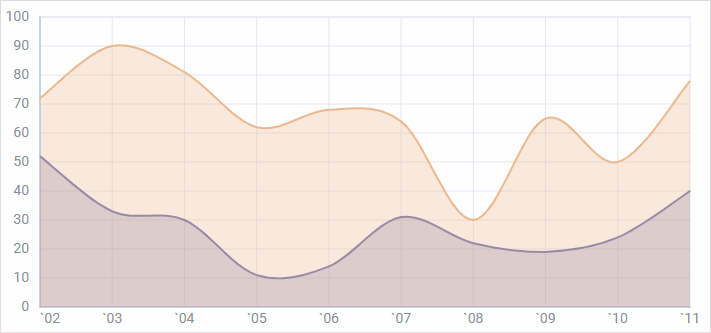
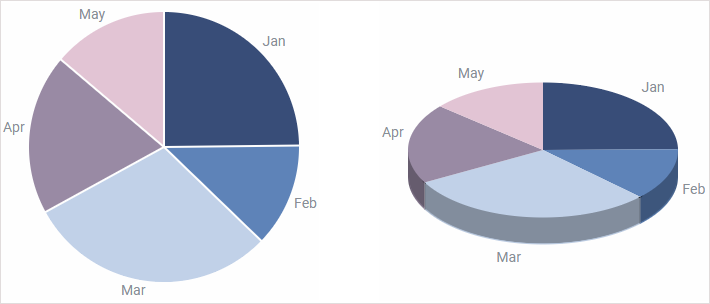
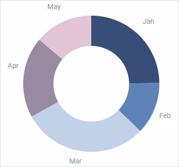
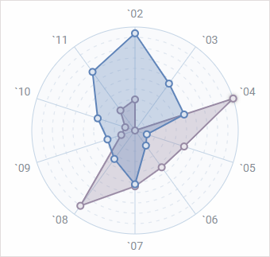
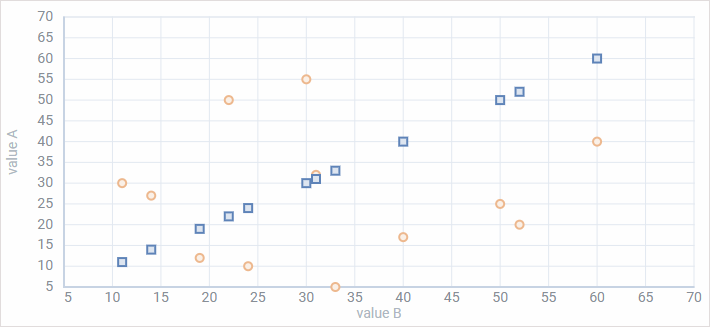

dhtmlxChart provides a variety of charts types that will help you to represent you data in the most suitable way. Each type of chart is easily configurable and can be adjusted according to your preferences. All in all there are 11 types of chart, in the list below they are combined into groups for the sake of convenience:
This is a basic chart type that shows changes of trends in progress over a period of time. Thus it will help you to display the dynamics of prices over a year or how the number of staff has increased over several years. Choose this variant when your data has more than 10 items.

Related sample: Chart. Basic Initialization Line Chart

Related sample: Chart. Basic Initialization Spline Chart
The same as Line chart it displays data for certain periods. It greatly suits you if there are less then 10 items in your data set.

Related sample: Chart. Basic Initialization Bar Chart

Related sample: Chart. Basic Initialization X-Bar Chart
Area chart is based on the Line chart. The difference is that areas below lines are filled with color. This type of chart allows you to provide visual comparison of two or more values over time.

Related sample: Chart. Basic Initialization Area Chart

Related sample: Chart. Basic Initialization Spline Area Chart
Pie chart and its variations are the best choice when you deal with proportions and percentages. It is a circular chart divided into proportional parts that illustrate relations between items in a data set.

Related sample: Chart. Basic Initialization Pie Chart
Related sample: Chart. Basic Initialization Pie 3D Chart

Related sample: Chart. Basic Initialization Donut Chart
This one is a two-dimensional chart that allows placing one or several series of values over multiple numerical variables. For example, Radar chart will help you to study how a number of parameters relate to one item (the center point of a chart) and compare their values.

Related sample: Chart. Basic Initialization Radar Chart
The peculiarity of Scatter Chart is that it allows exploring relations between two sets of data in order to find out possible dependencies or patterns.

Related sample: Chart. Basic Initialization Scatter Chart
Back to top